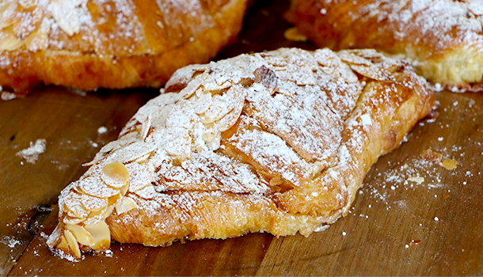
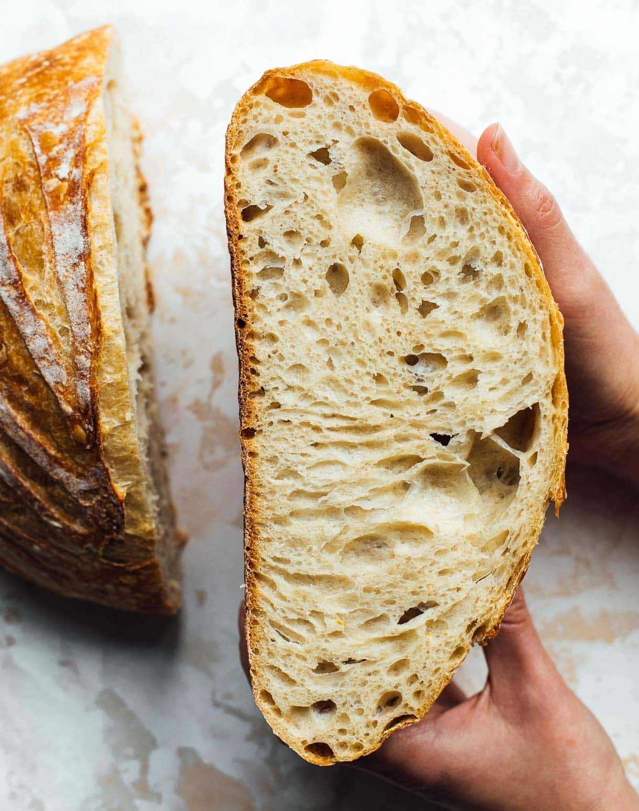

Hello, future customers! Im 28 year old denezel an aspiring baker hailing from Seattle. I've been baking and discovered my love for baking was at the ripe age of 10. I baked these lovely chocolate chip cookies with my grandmother. The joy and dedication of dreating something so delicous from scratch enthralled me as a young child. Over the years i honed my skills by then creating amd trying more recipes and even some orginals of my own. Enough about me lets get into sime of mty favorite recipes!

Heartbeet Kitchen's image

Vincenzo Plate images
First, mix the starter, water, and 3 cups of flour in a large bowl. This should create a sticky dough. Next, add salt,and remaining flour 1 tablespoon at a time until they are fully incorporated. Then, knead the dough on a floured surface for about 15 minutes. Once the kneading is done, place the dough in a lightly greased bowl, cover it, and let it rise for about 5 hours. Finally, shape the dough into a loaf, and let it rest for 30 minutes. When you are ready to bake, preheat your oven to 450 degrees and bake for about 30 minutes until it's golden brown.